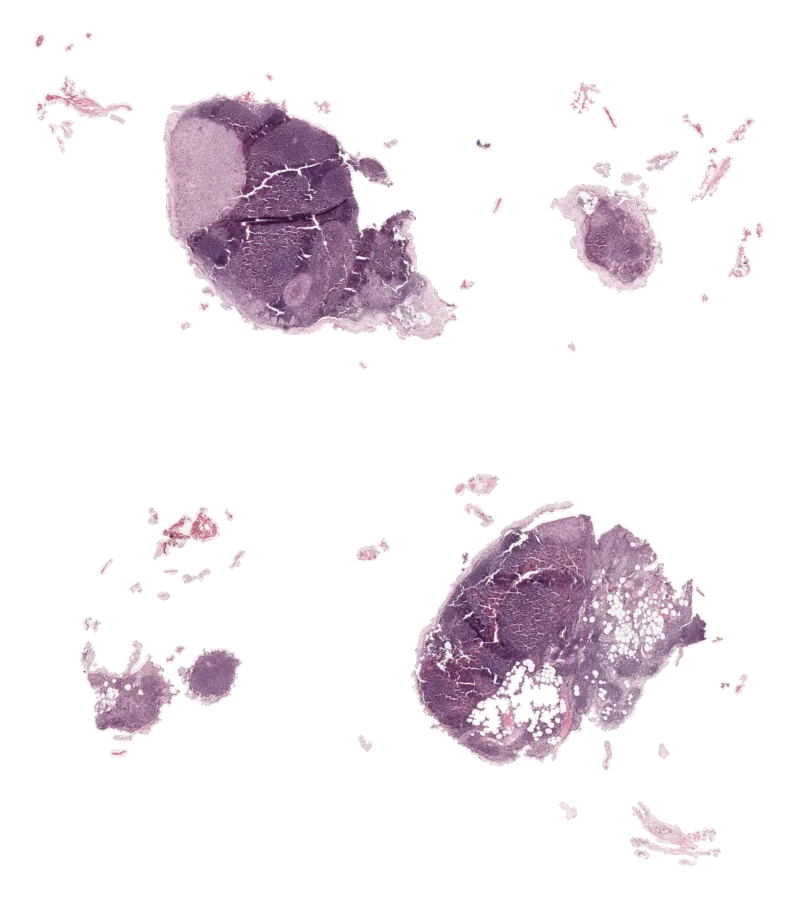
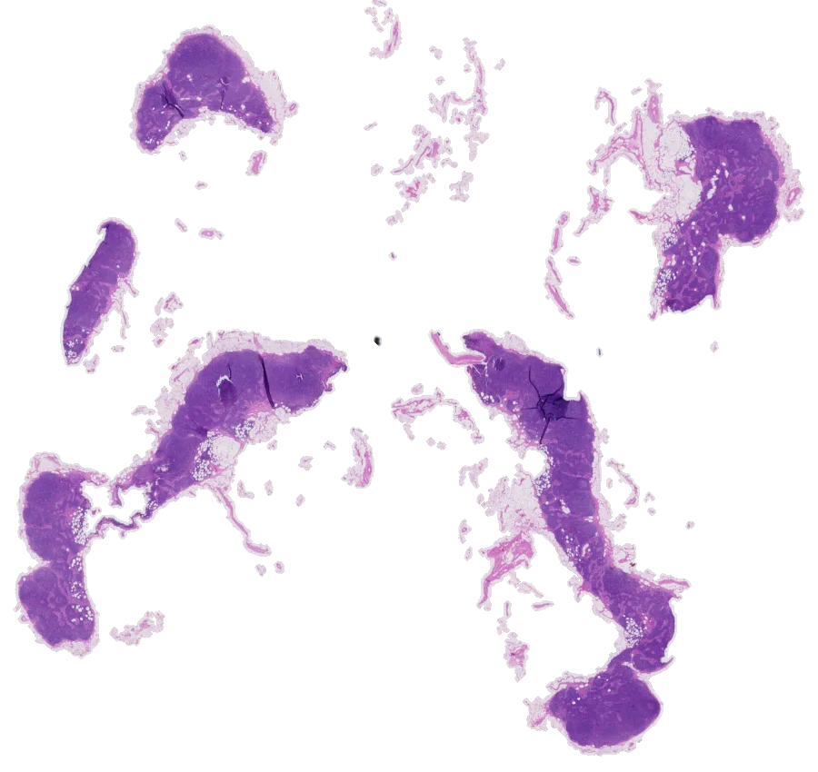
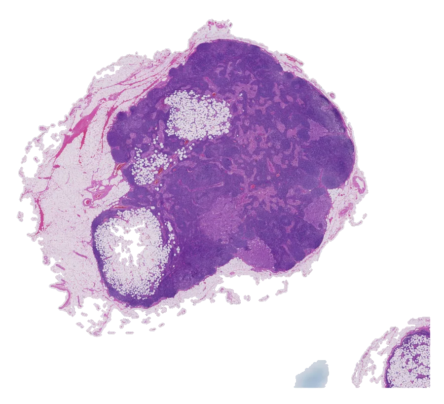
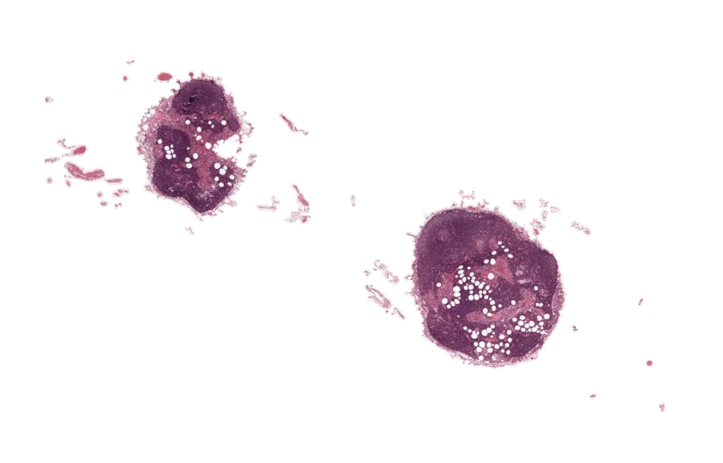
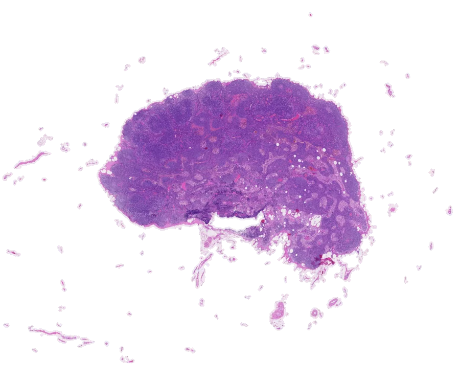
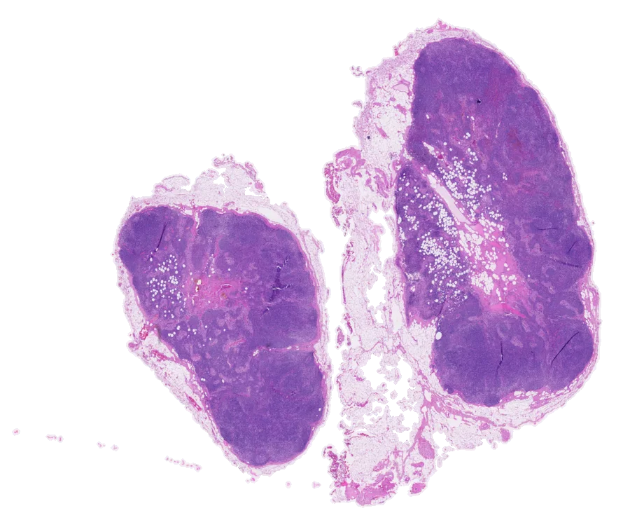
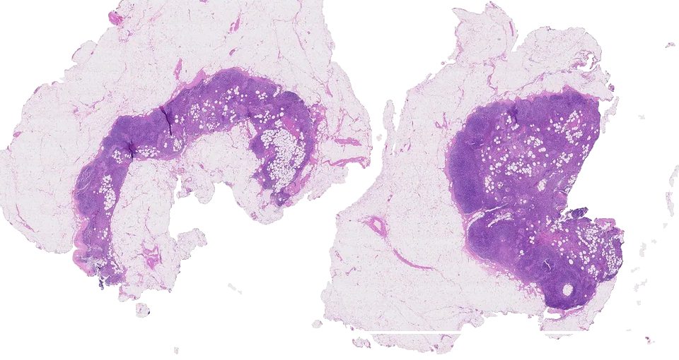
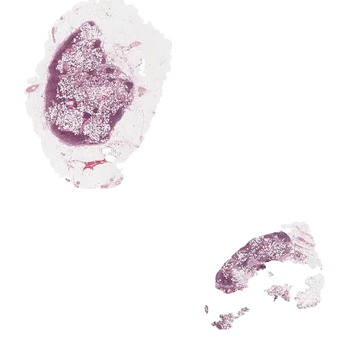

Training and evaluation
tumor_084 alone supplies the CAM-specific fit and the training-derived Bora probability-margin threshold. It is excluded from the ten held-out slide scores. The eight other previously tested slides plus normal_103 and normal_004 form the frozen set (four positive, six benign). All expert annotations were visible before this rerun, so these scores are retrospective and reference-visible. The slides come from the public CAMELYON16 training release, not the hidden challenge test. Patient and centre separation is unverified.
Bora runs on all ten first. U-Net and DeepLabV3+ will then be fitted on tumor_084 only; MedSAM will use boxes from that U-Net and VISTA-PATH retains its fixed generic tumor prompt. Each result appears here only after an independent pixel, model, scorer, visual and lifecycle audit.
Progress
Current method performance
Native known-pixel scores are primary; shared-support values are shown on the result page. Pending cells contain no historical values.
| Held-out slide | Bora | Class-aware U-Net | DeepLabV3+ | MedSAM | VISTA-PATH |
|---|---|---|---|---|---|
| tumor_038 | Pending | Pending | Pending | Pending | Pending |
| tumor_075 | Pending | Pending | Pending | Pending | Pending |
| tumor_087 | IoU 4.9% · Dice 9.3% · balanced accuracy 52.5% | Pending | Pending | Pending | Pending |
| tumor_091 | Pending | Pending | Pending | Pending | Pending |
| normal_019 | Pending | Pending | Pending | Pending | Pending |
| normal_108 | False-positive tissue 0.015840 mm² · slide call negative | Pending | Pending | Pending | Pending |
| normal_116 | Pending | Pending | Pending | Pending | Pending |
| normal_150 | False-positive tissue 0.057824 mm² · slide call negative | Pending | Pending | Pending | Pending |
| normal_103 | Pending | Pending | Pending | Pending | Pending |
| normal_004 | Pending | Pending | Pending | Pending | Pending |
Inspect the ten test slides

tumor_038
Metastasis-positive official reference
All tumor_084-fit methods pending

tumor_075
Metastasis-positive official reference
All tumor_084-fit methods pending

tumor_087
Metastasis-positive official reference
Bora scored · other methods pending

tumor_091
Metastasis-positive official reference
All tumor_084-fit methods pending

normal_019
Benign official reference
All tumor_084-fit methods pending

normal_108
Benign official reference
Bora scored · other methods pending

normal_116
Benign official reference
All tumor_084-fit methods pending

normal_150
Benign official reference
Bora scored · other methods pending

normal_103
Benign official reference
All tumor_084-fit methods pending

normal_004
Benign official reference
All tumor_084-fit methods pending
The earlier tumor_093-only analysis is preserved as a separate model version; its scores are not part of this run.